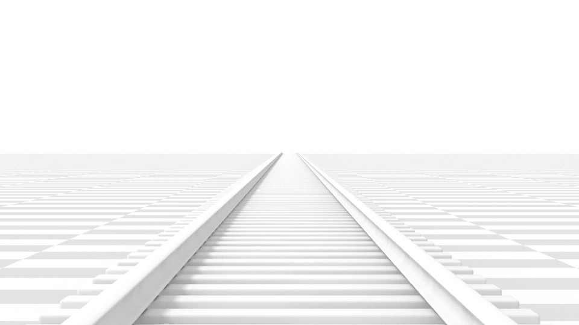

Дані Об'єкта -- Object Data¶
Орієнтир -- Reference
| Mode: | Object Mode |
|---|---|
| Editor: |
Камери є невидимі на зображах, рендерах, а тому вони не мають жодних устав для матеріалів чи текстур. Однак, вони мають панелі устав «Об'єкт» -- Object та «Правка» -- Editing, які доступні та показуються, коли камера є виділеним активним! об'єктом.
Об'єктив -- Lens¶
Панель «Об'єктив» -- Lens.
Опції об'єктива камери керують способом, яким 3D об'єкти представлені на 2D зображенні.
Тип Об'єктива -- Lens Type¶
Є три різних типи об'єктивів:
- Перспектива -- Perspective
- Ортогонально -- Orthographic
- Панорамно -- Panoramic
Перспектива -- Perspective¶
This matches how you view things in the real world. Objects in the distance will appear smaller than objects in the foreground, and parallel lines (such as the rails on a railroad) will appear to converge as they get farther away.

Зображ сцени залізничної колії через камеру з об'єктивом типу Perspective.
Устави, які коригують цю проекцію включають:
- Фокусна Відстань -- Focal Length
- Зсув -- Shift
- Розмір Датчика -- Sensor size
- Фокусна Відстань -- Focal Length
Устава «Фокусна Відстань» -- focal length керує величиною зумування, тобто обсягом сцени, який видимий за раз. Довші фокусні відстані дають менше Поле Зору -- FOV (більше зумування), тоді як короткі фокусні відстані дозволяють вам бачити більше зі сцени за раз (більше Поле Зору -- FOV, менше зумування).
Зображ тієї, що вище сцени колії, але з фокусною відстанню 210 мм замість 35 мм.
- Одиниця Об'єктива -- Lens Unit
- Фокусна відстань може бути задана у міліметрах або у градусах як фактичний кут Поля Зору -- Field of View.
Ортогонально -- Orthographic¶
При типі об'єктива «Ортогонально» -- Orthographic об'єкти завжди виглядають в їх фактичному розмірі, незалежно від відстані. Це означає, що паралельні лінії виглядають паралельними та не збігаються, як при типі Perspective.

Зображ тієї, що вище сцени колії, але типом об'єктива Orthographic.
- Ортогональний Масштаб -- Orthographic Scale
Ця устава керує розміром видимості об'єктів в огляді камери.
Зауважте, це ефективного єдина устава, що застосовується при ортогональному вигляді. Оскільки, паралельні лінії не збігаються при ортогональному режимі (немає точок збігу, то устави зсуву об'єктива є еквівалентними уставам пересування камери у 3D Огляді -- 3D View.
Панорамно -- Panoramic¶
Panoramic cameras are only supported in the Cycles Renderer. See the Cycles documentation.
Зсув -- Shift¶
Устава «Зсув» -- Shift дозволяє коригувати точки збігу -- vanishing points. Точки збігу стосуються позицій, в яких збігаються паралельні лінії. У цьому прикладі, найбільш очевидна точка збігу знаходиться у кінці залізничної колії.
Щоб побачити, як це працює, розберемо наступні приклади:

Зображ сцени залізничної колії зі значенням 0.330 зсуву об'єктива горизонтально.

Зображ сцени залізничної колії з обертанням об'єкта камери замість зсуву об'єктива.
Зверніть увагу, як горизонтальні лінії залишаються ідеально горизонтальними при використанні зсуву об'єктива та отримують перекіс при обертанні об'єкта камери.
Використання зсуву об'єктива є еквівалентом зображування, рендерингу зображення з більшим Полем Зору -- FOV та обрізкою його від центру.
Відсікання -- Clipping¶
- Старт Відсіку -- Clip Start та Кінець Відсіку -- Clip End
- Це інтервал, в якому об'єкти є безпосередньо видимими; тільки об'єкти у межах цих лімітів зображуються, рендеряться.
Для показу з OpenGL задання відстаней відсікання лімітованими значеннями є важливим для гарантування достатньої точності растеризації. Зображі з промінь-трасуванням не страждають від цієї проблеми так сильно, і тому для них можуть задаватися безпечно більш крайні значення.
При увімкненні опції «Ліміти» -- Limits на панелі «Показ» -- Display стають видимі ці межі відсікання у вигляді двох жовтих точок на лінії зору камери.
Mẹo
Змінення значень відсікання може мати серйозний вплив на продуктивність зобража, рендера. Важливо завжди задавати ці значення Start та End на безпечних відстанях, щоб вони обидва не були надто екстремальними або надто малими, з метою отримання оптимальної тривалості зображування.
Xem thêm
- Відсікання огляду Камери -- Blender Render Camera Clipping.
- Відсікання 3D Огляду -- 3D View clipping.
Камера -- Camera¶
Панель «Камера» -- Camera.
- Передустави Камери -- Camera Presets
- Передустави -- Presets, що відповідають реальним камерам.
- Датчик: Розмір -- Sensor: Size
- This setting is an alternative way to control the focal length, it is useful to match the camera in Blender to a physical camera & lens combination, e.g. for motion tracking.
- Підгонка Датчика -- Sensor Fit
- Опція для керування тим, в якому вимірі (вертикально чи горизонтально) припасовувати кут поля зору камери.
Глибина Різкості -- Depth of Field¶
Camera Depth of Field panel.
Real-world cameras transmit light through a lens that bends and focuses it onto the sensor. Because of this, objects that are a certain distance away are in focus, but objects in front and behind that are blurred.
Ділянка у фокусі називається «фокальною точкою» -- focal point та може задаватися як точне значення або за допомогою відстані між камерою та обраним об'єктом:
- Об'єкт Фокуса -- Focus Object
- Дає вибрати об'єкт, який буде визначати фокальну точку. Підв'язування такого об'єкта буде дезактивувати параметр відстані. Зазвичай, це використовується для задання точного контролю за позицією фокальної точки, а також дозволяє анімувати та зосереджувати її на іншому об'єкті.
- Відстань -- Distance
Задає відстань до фокальної точки, якщо об'єкт фокуса -- Focus Object не вказано. Якщо увімкнено опцію «Ліміти» -- Limits, то ця відстань показується жовтим хрестиком на лінії зору камери.
Gợi ý
Наведення вказівника миші над властивістю «Відстань» -- Distance та натиснення E вмикає спеціальний відбірник глибини -- Depth Picker. Далі слід клацнути на точці у 3D Огляді для вибору відстані до цієї точки від камери.
- Висока Якість -- High Quality
- Для точного представлення глибини різкості в оглядвікні (обчислення радіусу розмиву), як на зображі, рендері, ви маєте вмикати цю опцію High Quality. При її вимкненні ви можете помічати різницю у відтіненні. (Затьмарюється сірим, якщо не підтримується GPU відеокарти).
- Діафрагмове число Оглядвікна -- Viewport F-stop
- Керує реально-часовим ефектом фокального розмиву у відеоряднику або при зображуванні з OpenGL, а також, при увімкненні огляду камери, в оглядах камер у 3D Огляді. Величина розмиву залежить від цієї устави, а також від устав Focal Length та Sensor Size. Менше значення Viewport F-stop дає більше розмиву.
- Пелюстки -- Blades
- Add a number of polygonal blades to the blur effect, in order to achieve a bokeh effect in the viewport. To enable this feature, the blades must be set to at least 3 (3 sides, triangle).
Ефект боке в оглядвікні при заданні кількості пелюсток як 3.
Показ -- Display¶

Camera Display panel.
- Ліміти -- Limits
- Показує лінію зору, на якій позначаються значення Start and End відсікання.
- Імла -- Mist
- Перемикає показ лімітів імли. Ці ліміти показуються як дві білі точки на лінії зору камери. Ці ліміти імли та інші опції задаються у вкладці «Світ» -- World на панелі the «Імла» -- Mist.

Огляд камери з показом безпечної області, датчика та імені.
- Датчик -- Sensor
- Показує пунктирну рамку датчика в огляді камери.
- Ім'я -- Name
- Перемикає показ імені цієї камери в її огляді.
- Розмір -- Size
- Розмір візуалізації об'єкта камери у 3D Огляді -- 3D View. Ця устава не має жодного впливу на вивід зобража з камери. Візуалізація камери може також бути масштабована за допомогою стандартної команди Масштабування -- Scale, S.
- Затінювальна маска -- Passepartout
Ця опція затемняє область поза полем зору камери.
- Альфа -- Alpha
- Керує прозорістю затінювальної маски.
Напрямні Композиції -- Composition Guides¶
Composition Guides -- Напрямні Композиції, що доступні з цього меню, можуть допомогти при кадруванні знімка. Доступні вісім типів таких напрямних:
- Центр -- Center
- Додає лінії, що ділять кадр навпіл по вертикалі та по горизонталі.
- Центр Діагоналей -- Center Diagonal
- Додає лінії, що з'єднують протилежні кути кадру.
- Третини -- Thirds
- Додає лінії, що ділять кадр на третини вертикально і горизонтально.
- Золотий перетин -- Golden
- Додає лінії, що ділять ширину та висоту кадру на основі пропорцій Золотого перетину (близько 0.618 з усіх боків кадру).
- Золотий Трикутник А -- Golden Triangle A
- Draws a diagonal line from the lower left to upper right corners, then adds perpendicular lines that pass through the top left and bottom right corners.
- Золотий Трикутник Б -- Golden Triangle B
- Рисує лінії так само, як і версія А, але з протилежних кутів.
- Гармонійний Трикутник А -- Harmonious Triangle A
- Draws a diagonal line from the lower left to upper right corners, then lines from the top left and bottom right corners to 0.618 the lengths of the opposite side.
- Гармонійний Трикутник Б -- Harmonious Triangle B
- Рисує лінії так само, як і версія А, але з протилежних кутів.
Безпечні Області -- Safe Areas¶
Безпечні Області -- це напрямні рамки, що використовуються для розміщення елементів, щоб гарантувати, що найбільш важливі частини вмісту будуть видимі на всіх екранах.
Різні екрани мають різні величини лямівки -- overscan (особливо старі телевізори). Це означає, що не увесь вміст буде видимим для усіх глядачів, оскільки частини зображення біля країв не показуються. Для вирішення цієї проблеми виробник телевізорів визначили дві області, у межах яких вміст гарантовано буде показуватися: безпечна область -- action safe та область титрів -- title safe.
Сучасні рідкокристалічні/плазмові -- LCD/plasma екрани з суто цифровими сигналами не мають жодної лямівки -- overscan, але дотримання безпечних областей все ще вважається найкращим на практиці та може бути юридично необхідним для трансляції.
У Blender'і безпечні області можуть бути задані для оглядів Камери -- Camera та Відеорядника -- Sequencer.
Панель «Безпечні Області» - Safe Areas доступна серед властивостей камери у Редакторі Властивостей, а також серед властивостей огляду у Редакторі Відеорядів.
Безпечні Області можуть налаштовуватися на основі їх зовнішнього поля, яке є відсотковим масштабом від області між центром та розміром зобража, рендера. Ці значення є спільними для Редактора Відеорядів та огляду камери.
Головні безпечні області¶

Червона лінія: Область Дійства -- Action Safe. Зелена лінія: Область Титрів -- Title Safe.
- Область Титрів -- Title Safe
- Також відома як «Область Графіки» -- Graphics Safe. Розміщення усієї важливої інформації (графіки або тексту) всередині цієї області гарантує, що вона буде видима для більшості глядачів.
- Область Дійства -- Action Safe
- Впевнюйтеся, що будь-які значні дійство або персонажі у знімку знаходяться всередині цієї області. Ця зона також подвоюється як вид «припуску» для екрану, який може використовуватися для вберігання елементів від нагромадження елементів на краях кадру.
Mẹo
Правові стандарти -- Legal Standards
Кожна країна установлює правовий стандарт для трансляції. Вони включають, серед інших речей, специфічні значення для безпечних областей. Стандарти у Blender'і для безпечних областей відповідають стандарту Європейського Союзу EBU (European Union). Переконайтеся, що ви використовуєте коректні значення при роботі для транслювання для запобігання будь-яким проблемам.
Центровано-Обрізані Безпечні Області -- Center-Cut Safe Areas¶

Блакитна лінія: центрована область дійства. Синя лінія: центрована область титрів.
Центровано-обрізані області -- це другий набір безпечних областей, що гарантують, що вміст буде коректно показуватися на екранах з різними пропорціями сторін. Старі телевізори, що отримують відео з пропорцією 16:9 або 21:9, будуть відрізати зображення по сторонах. Позиціювання вмісту всередину таких центровано-обрізаних областей гарантує, що більшість важливих елементів вашої композиції зможуть залишатися видимими на таких екранах.
Blender стандартно показує пропорцію 4:3 (квадрат) всередині пропорції 16:9 (широкий екран).